A farmhouse bathroom doesn't require a full renovation to pull off, most of the character comes from small, genuinely doable projects rather than anything structural. A reclaimed shelf, a repurposed ladder, a coat of chalk paint, and the room starts to feel considerably more collected.
None of the ideas below demand advanced woodworking skills. Most use materials that are either already sitting around the house or cheap enough to pick up for a single weekend project.
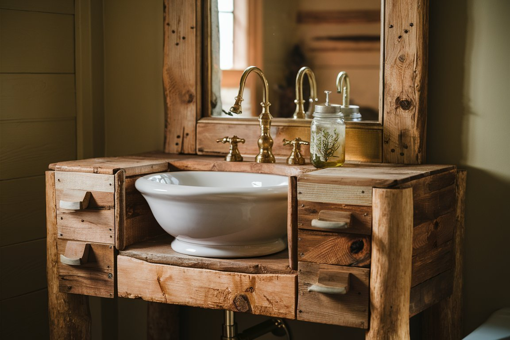
18 DIY Farmhouse Bathroom Decor Projects
1. Country-Style Curtains
Florals, checks, or simple ticking stripes in a light cotton or linen fabric bring an easy farmhouse touch to a bathroom window.
The same fabric works just as well hung to hide storage under the sink, giving the room a cohesive look in two different spots.
It's a simple sewing project, or no sewing at all with the right pre-made curtain, that still makes a noticeable difference.
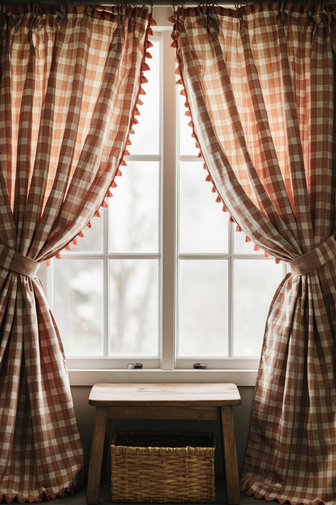
2. Ladder Shelf for Decor
A short, squat ladder makes a genuinely useful standing shelf once propped beside a tub or sink.
Towels, plants, or a few vintage finds all display well across its rungs, filling an otherwise unused corner.
It brings a shabby-chic feel while still doing real functional work, which is more than most purely decorative pieces manage.
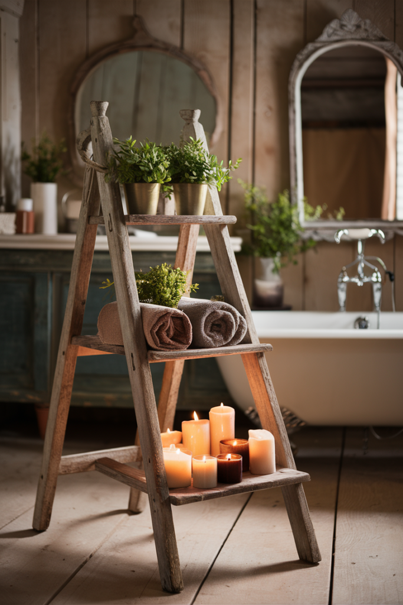
3. Hand-Painted Bath Mat
A plain cotton bath mat becomes a genuinely custom piece with a hand-painted pattern.
Gingham, florals, or a buffalo check design, applied with fabric-safe paint and properly sealed for durability, turns an ordinary mat into something distinctive.
It's an easy, low-cost way to add a bit of personality to a surface that usually goes unnoticed.
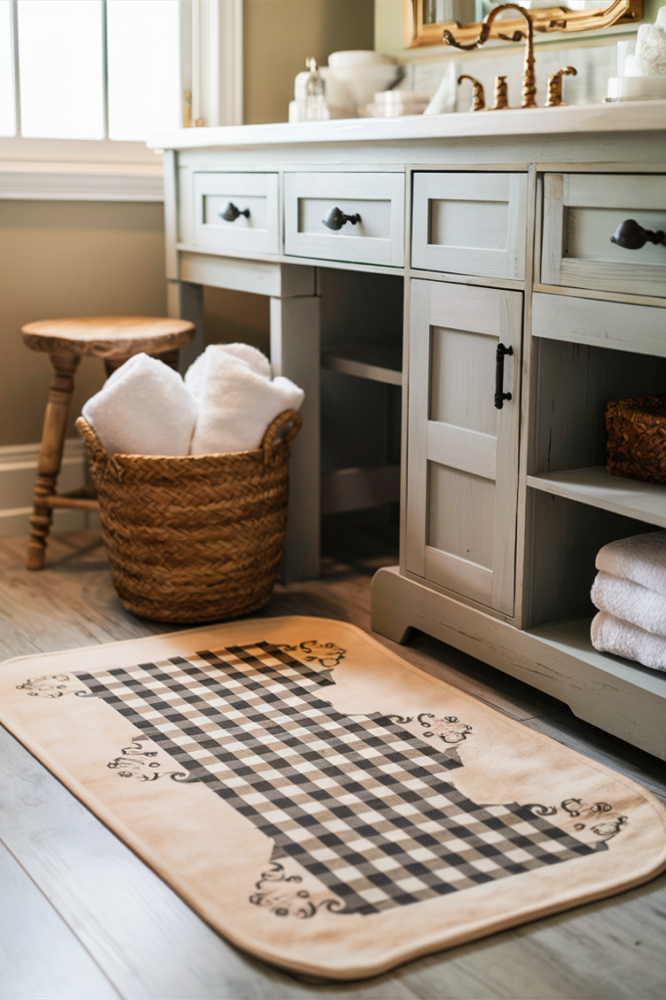
4. Rustic Wooden Frames
Plain photo frames rarely do much for a bathroom's overall look.
Framing a mirror or a piece of art in distressed wood instead brings genuine warmth, a whitewashed finish, rough edges, or muted gray tones all work well.
It's a subtle upgrade, but one that gives the whole room a cozier, more considered feel.
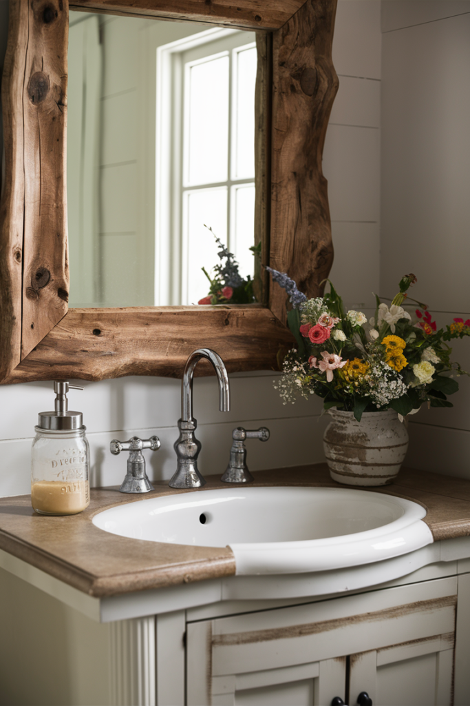
5. DIY Wire Basket Towel Holders
A couple of wire baskets, lined with burlap or linen and attached to the wall, build an instant towel storage solution that looks genuinely intentional.
It's a simple project that transforms a pile of towels from looking tossed aside into something that reads as deliberately styled.
Rustic, tidy, and easy to put together in an afternoon.
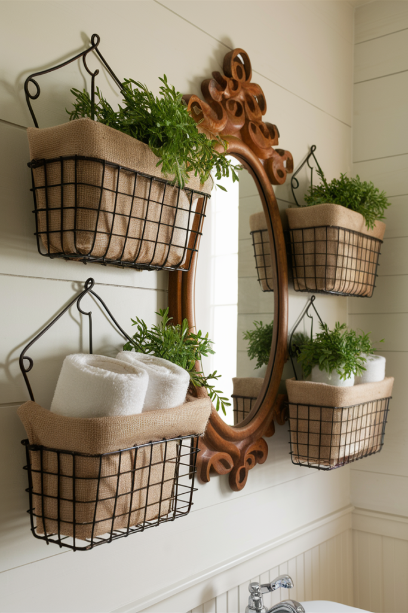
6. Swap Lighting for Farmhouse Fixtures
Standard builder-grade light fixtures rarely do a farmhouse bathroom any favors.
Black matte metal, wood accents, or cage-style pendants all bring a cozier glow than a plain flush-mount fixture.
Vintage-style Edison bulbs push the look even further, lighting genuinely changes how a whole room feels, more than most people expect.
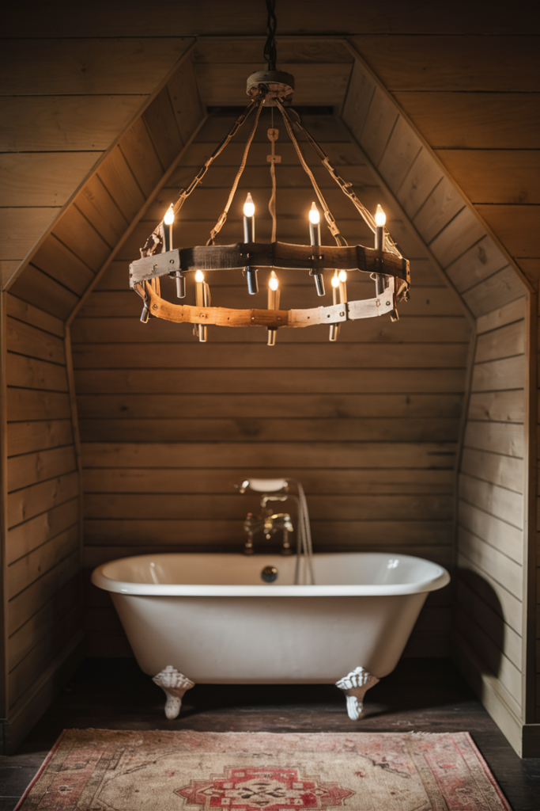
7. Chalkboard Labels on Everything
Cotton balls, bath salts, and Q-tips all look more intentional once they're transferred into clear jars and labeled.
Chalkboard paint or chalkboard-style stickers applied to each jar keeps the labeling consistent and genuinely farmhouse in feel.
It's a small project, but it turns a cluttered counter into something that reads as organized rather than accidental.
8. Rope-Wrapped Towel Hooks
Basic wall hooks, wrapped in jute or thick twine, turn into something considerably more interesting than hardware-store standard.
Mounted in a row, they bring a coastal-farmhouse feel to a bathroom without much actual effort or cost.
It's one of the more budget-friendly projects on this entire list, which makes it an easy one to try first.
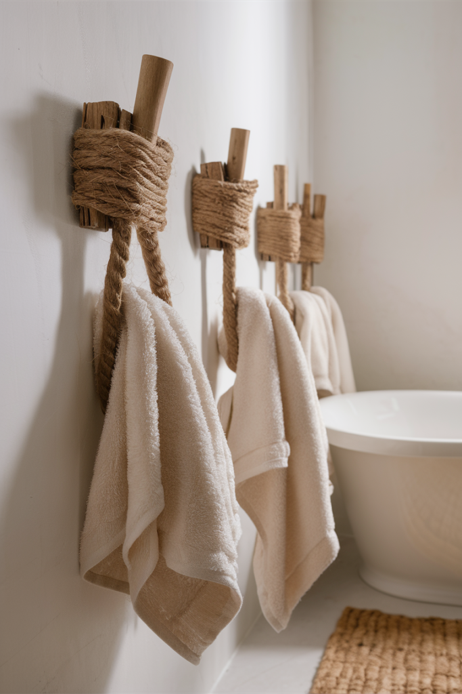
9. Woven Baskets for Storage
Swapping plastic bins for wicker or woven baskets changes a bathroom's whole feel.
Toilet paper, extra soaps, or hand towels all store well inside a basket tucked under the vanity or slid onto a shelf.
The natural texture adds a soft, farmhouse quality that plastic storage simply can't replicate, while still staying genuinely practical.
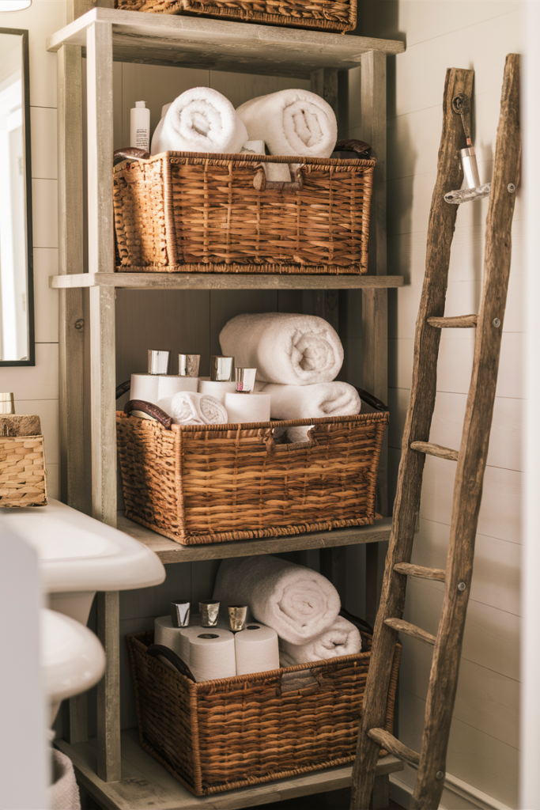
10. Repurposed Window Frame Wall Decor
An old window frame, with the panes intact but the glass removed, makes a genuinely striking rustic decor piece.
A mirror, dried flowers, or photos placed behind the panes turns a salvaged window into real wall art.
A bit of chipped, worn paint actually helps here, the imperfections read as character rather than wear.
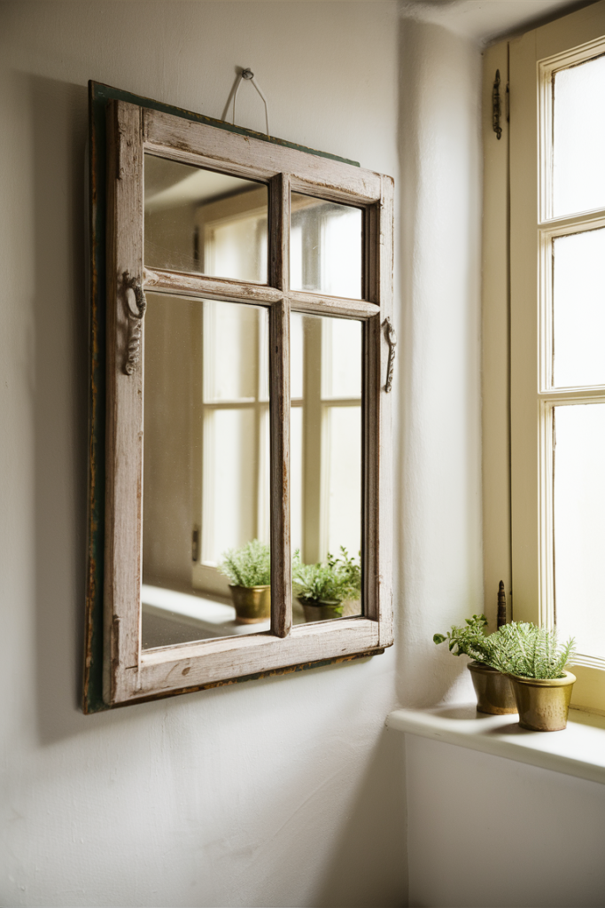
11. Farmhouse-Style Wall Signs
A small wooden sign with a cheeky, hand-lettered phrase remains a reliable farmhouse bathroom staple.
Salvaged wood and stencils, or a pre-made wooden sign, both deliver the same cozy, barn-inspired look.
Hung above the toilet or towel rack, a well-chosen sign tends to get a genuine smile out of guests.
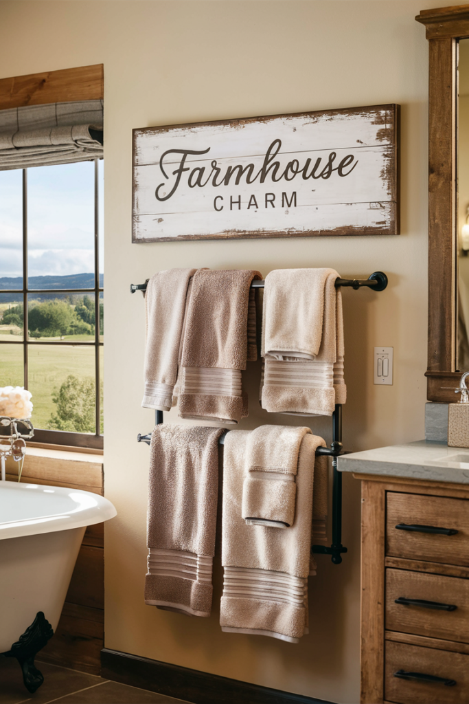
12. Galvanized Metal Storage Bins
Galvanized buckets, bins, or trays bring genuine country character to a bathroom.
Used under the sink, on open shelves, or beside the toilet for extra rolls, they do real storage work while staying visually on-theme.
A slightly dulled, worn finish reads as more authentically rustic than anything too polished or shiny.
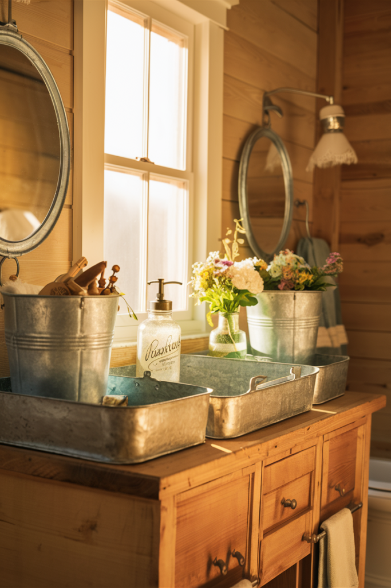
13. Reclaimed Wood Shelves
A bathroom can rarely have too many shelves, especially rustic ones.
Old wood planks, stained a warm brown and mounted with black metal brackets, create simple open shelving for rolled towels, candles, or small plants.
It's an easy way to fill otherwise empty wall space while adding real storage at the same time.
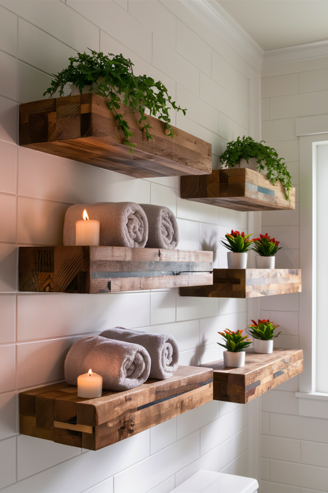
14. Mason Jar Wall Organizers
Mason jars have more uses than jam and tablescapes.
A few hose clamps screwed onto a wooden board, with mason jars attached and the whole thing mounted to the wall, builds an easy organizer for cotton balls, Q-tips, or makeup brushes.
Staining the board a rich walnut and using slightly vintage-looking jars pushes the rustic feel even further.
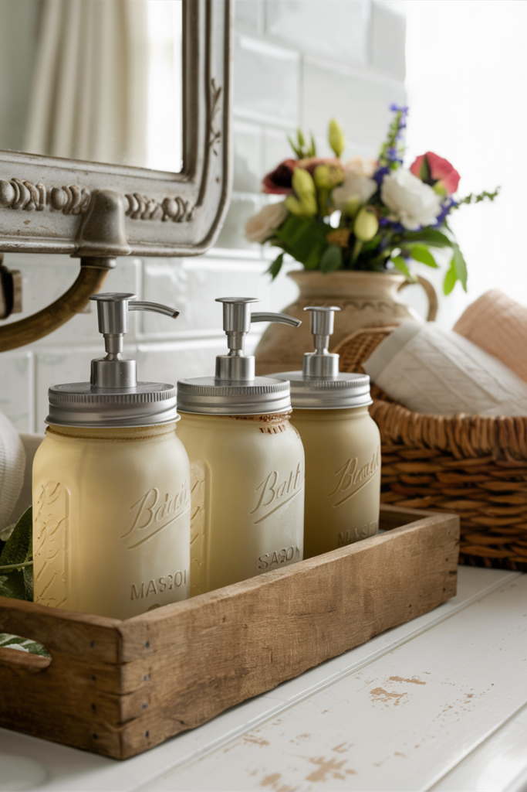
15. DIY Shiplap Walls
For a genuine transformation without knocking down an actual wall, shiplap paneling on just one wall does a lot of visual work.
Installed behind the sink or tub, it reads especially well, and painting it white or light gray keeps the whole bathroom feeling bright and airy.
A single accent wall is plenty, committing to shiplap throughout the entire room risks tipping the look into something overdone.
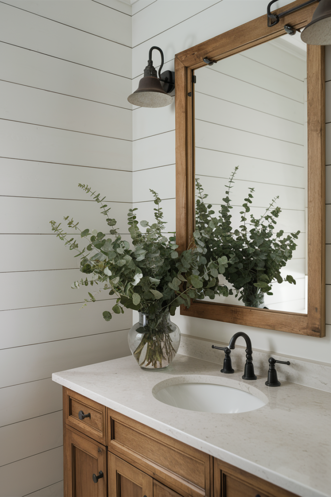
16. Add a Mirror Framed With Barn Door Hardware
This idea announces "farmhouse" louder than almost anything else on this list.
Mounting a basic mirror with sliding barn door hardware, or framing it in reclaimed wood, turns a plain mirror into something closer to a design feature.
It's an easy way to make a mirror read as intentional wall art rather than just a functional fixture.
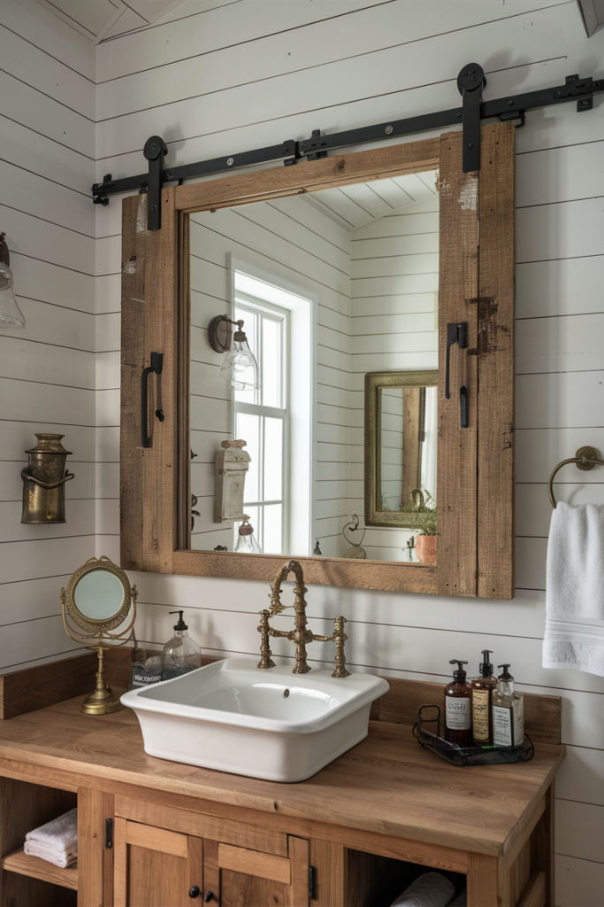
17. Repurpose an Old Ladder Into a Towel Rack
An old wooden ladder, the kind that's been sitting in a garage for years, makes a genuinely good rustic towel rack.
Leaned against the wall, it creates instant vertical storage without any real building required.
A coat of chalk paint, lightly distressed, pushes the look fully into farmhouse territory.
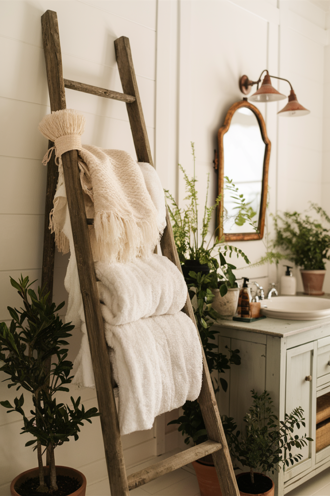
18. Build Your Own Wooden Vanity
This one takes more effort than most on this list, but an old desk or dresser is a genuine head start.
Cutting a hole for the sink, sealing the wood well, and finishing the surface turns a secondhand piece of furniture into a custom farmhouse vanity.
A bowl-style vessel sink set into the reclaimed wood top pushes the whole look further, turning a functional fixture into the bathroom's actual centerpiece.
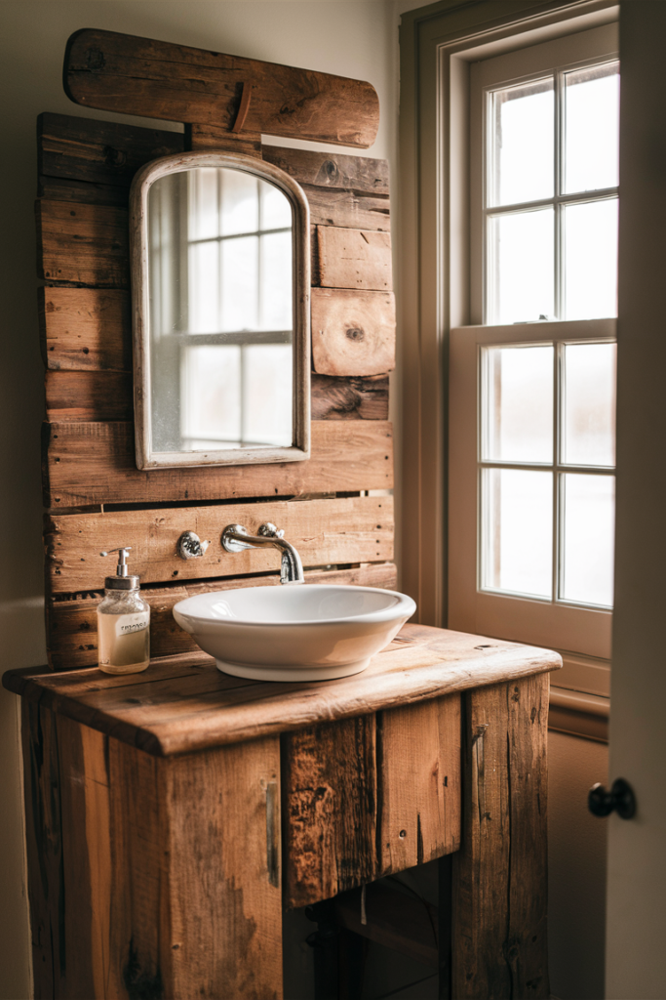
Final Thoughts
None of these eighteen projects require a contractor or a big budget to pull off. A repurposed ladder, a few mason jars, or a simple coat of chalk paint can shift a plain bathroom toward genuine farmhouse character in an afternoon.
Starting with one or two small projects, rather than attempting the whole list at once, tends to produce a bathroom that feels collected over time rather than assembled all in a single weekend.